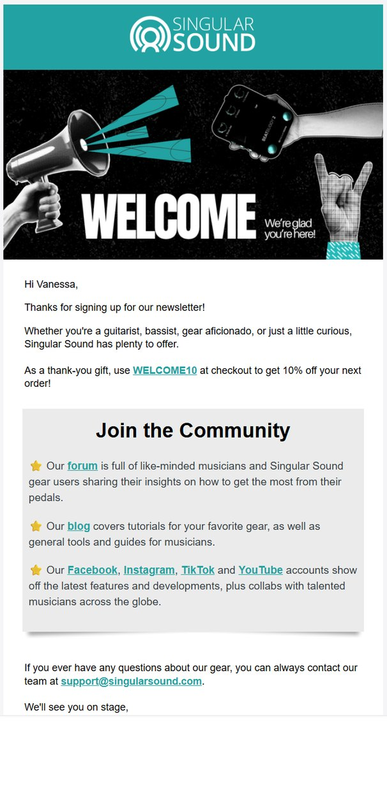
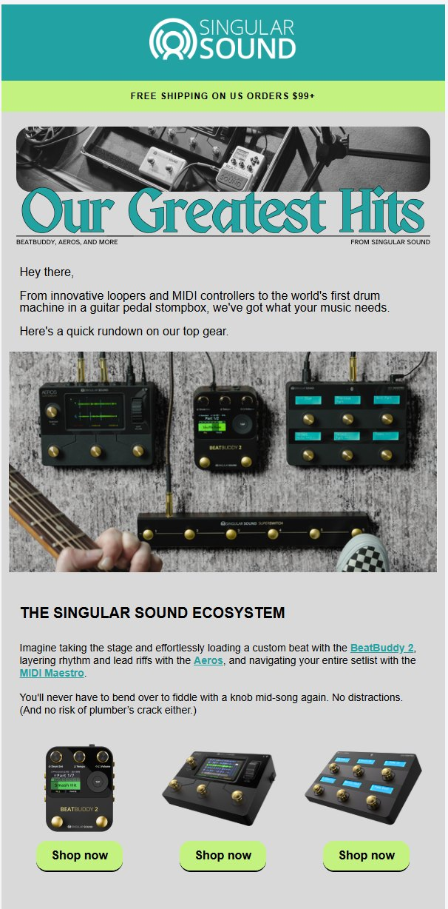
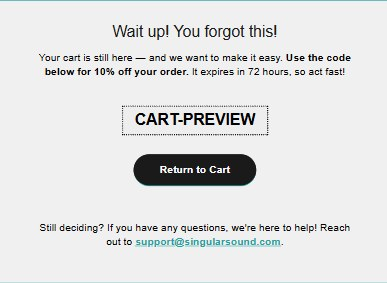
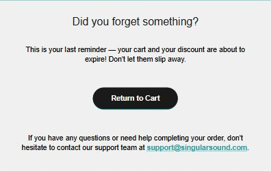
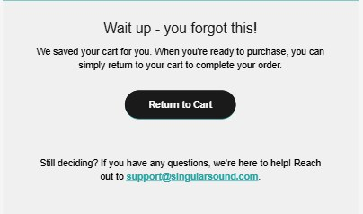
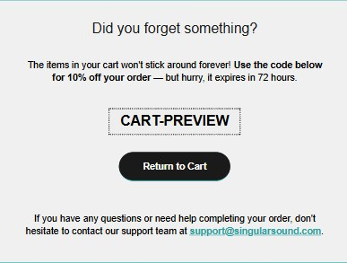
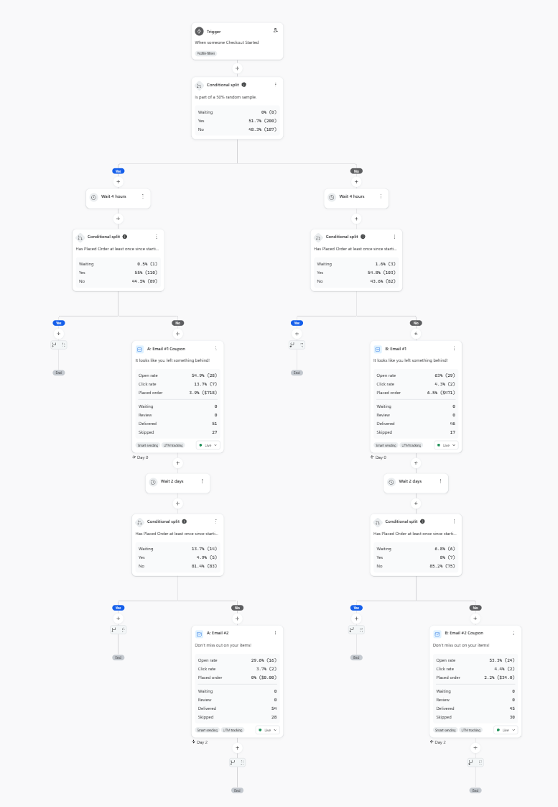
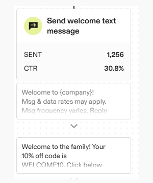
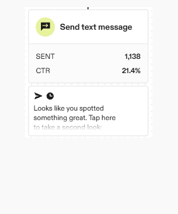
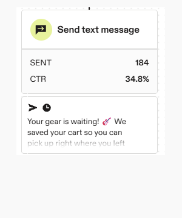

After leading Singular Sound’s move to Klaviyo, I built our automated email flows and manage our text flows in Attentive. Since the email flows went live in April 2026, they’ve brought in about $65K in revenue.
Role
Email and SMS flow strategy, copy, design, and testing
Company
Singular Sound
Timeline
2026, ongoing
Tools
Klaviyo, Attentive, Canva
The welcome series earns the most
Welcome series · Three emails over seven days
The idea
Everyone who joins our email list gets the same three emails, so they have to do a lot. The first says thanks, hands over a discount code, and points people to our forum, blog, and social channels. The second, “Our Greatest Hits,” is a quick tour of the gear. The third, sent on day 7, shows our gear in action with artists who use it.

Email 1, sent right away: welcome and 10% off

Email 2, sent on day 3: “Our Greatest Hits”
The results
Our top-earning flow: $45,059 in revenue from 131 orders
The welcome offer email, which includes the 10% code, brought in $39,238 from 100 orders, or $11.30 per recipient
Email #2 (“Our Greatest Hits”) brought in $1,746 and email #3 brought in $4,076
The takeaways
The 10% sign-up discount had been turned off in 2025. I suggested bringing it back, and it returned in January 2026. It greatly helped our flow revenue: journeys went from $4.2K in December to $20.4K in January and $45.0K in February.
A coupon-timing test on cart abandonment
Cart abandonment flow · Two emails, two versions
The idea
Shoppers who start checkout and don’t finish get two emails. The test started in May 2026, and the question is: does the 10% off code work better in the first email, or saved for the second? A random 50% of shoppers get the coupon in email #1, and the other 50% get it in email #2. Email #1 goes out after a 4-hour wait, and email #2 follows two days later. Anyone who buys in the meantime drops out of the flow. Smart sending is on for every email, so both groups are treated the same.
Version A: coupon first
Email #1 includes the 10% off code, which expires in 72 hours. Email #2 is a last reminder that the cart and discount are about to expire, with no new offer.

Email #1: the 10% off code

Email #2: a last reminder, no new offer
Version B: coupon second
Email #1 is a simple “we saved your cart” nudge with no discount. The code waits until email #2.

Email #1: a nudge, no discount

Email #2: the 10% off code
The early read
Coupon first: email #1 went to 51 people and brought in $718 (a 3.9% placed-order rate). Email #2 went to 54 people and brought in no orders.
Coupon second: email #1 went to 46 people and brought in $471 (6.5%). Email #2 went to 45 people and brought in $34 (2.2%).
Clicks: the email #1 with the coupon had a 13.7% click rate, versus 4.3% for the no-discount nudge.
It’s too early to call. Each email has only about 50 sends, and the results point in different directions: coupon second has the higher placed-order rate on email #1 (6.5% vs. 3.9%) and placed orders from both emails, while coupon first has more revenue ($718 vs. $505). My working theory is that holding the code back keeps shoppers interested longer, while a reminder with no new offer gives people little reason to come back — the coupon-first version’s second email drove no orders. I’m letting the test run until there’s enough volume to trust the result.

The flow in Klaviyo, with the random split at the top
Browse abandonment runs a similar coupon test, but smart sending was only on for half of its emails, so I’m not reporting those results.
The flows overall
Cart abandonment: $14,037 in revenue from 44 orders, a 4.3% conversion rate and $15.24 per recipient
Browse abandonment: $5,694 in revenue from 21 orders, a 0.5% conversion rate and $1.42 per recipient
Flow totals come from Klaviyo’s flow report for April through October 26, 2026. Klaviyo counts an order if it was placed after someone opened or clicked the email. The test figures come from the flow map, which shows each email’s delivered count and placed-order rate.
Three text flows run in Attentive
Welcome, browse abandonment, and cart abandonment texts
The emails aren’t the only thing running. Three automated text flows go out alongside them.

Welcome text

Browse abandonment text

Cart abandonment text
Welcome: it starts when someone signs up for texts. The welcome text includes the 10% off code and has a 30.8% click-through rate across 1,256 sends.
Browse abandonment: two hours after someone views a product, anyone who hasn’t added it to their cart gets a text. New subscribers are skipped. It has a 21.4% click-through rate across 1,138 sends.
Cart abandonment: it starts when someone adds an item to their cart. An hour later, anyone who hasn’t bought gets a text that says their cart is saved. New subscribers are skipped. It has a 34.8% click-through rate across 184 sends.
The results
$279,228 in revenue from the three text flows, January 1 through October 27, 2026
$229,779 over the same stretch of 2025 — that’s about $49,400 more, or 21.5% growth
Click-through rates come from Attentive’s journey view, covering January 2026 through October 27, 2026. Revenue comes from Attentive’s journey report, comparing January 1 through October 27 in both years.